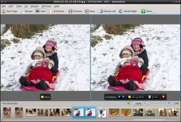

February did not went as expected: there was quite a lot of work to do on Unity 2D before Ubuntu Natty feature freeze, so I was asked to work on two Fridays. Not exactly what I planned...
So, what did I manage to get done in February nevertheless?
Gwenview and the SVG KPart moved to git. The repositories are here: Gwenview and SVG KPart. Thanks a lot to the KDE git people and to Marcel Wiesweg of digiKam fame, for his detailed instructions regarding the move of kdegraphics modules.
I initially planned to work on simplifying Gwenview importer but decided to give up for now as it was becoming too complex and not as important as another feature I have been wanting to implement for years now: a compare "mode".
I am not fully happy with the behavior yet. I like that it is not a separate mode: to compare pictures from browse mode you only have to select two pictures and switch to view or fullscreen. From view mode, control-click on a second picture in the thumbnail bar to compare it with the current one. As you can see on the screenshot I went for an asymmetric layout: the "best" picture is on the left and the "candidate" on the right. I am afraid it might be too complex, I need to try it with some real-world set of pictures (and real-world users). It is also missing a "synchronize" checkbox to be able to zoom and scroll the two pictures at once.
You can find the code in the compare-mode branch of Gwenview repository.
What to expect from march?
I am invited to a KDE SC 4.6 Release Party in the beautiful city of Toulouse, organized by the Toulibre association. I won't be just staying there chatting, eating and drinking though: a great Jedi, who shall remain anonymous (hi Kevin!) managed to mind-trick me into giving two presentations, so I am going to spend some time to prepare them.
I also plan to continue working on Gwenview compare mode. I hope to get it mostly ready by the end of this month.
Finally I want to resume the "Common UI Mistakes" series, since I did not have the time to write anything in February.
If you like what happened in February (not that there is that much to like this month!) or are interested in what is planned for March, consider supporting my work.
{kind=link}